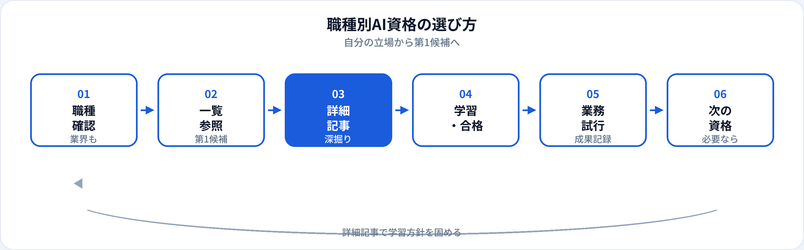

「自分の職種なら、どのAI資格から始めればいい？」——営業・事務・人事・マーケティングなど、職種によって資格の効き方は変わります。本記事は、20本のキャリアガイドを横断するハブ（一覧）です。職種別の第1候補を表で比較し、詳細ガイドへすぐ飛べるように整理しました。資格そのものの比較は初心者向け3資格比較、キャリアへの効き方はAI資格はキャリアにどう役立つ？も参照してください（2026年6月時点）。
職種別に選ぶ理由
AI資格は「取得すれば万能」ではありません。同じ生成AIパスポートでも、営業なら提案書のたたき台、人事なら採用文案と個人情報管理、経理なら数値を入力しない線引きと、現場で効く使い方が異なります。
業務シーンが違う
メール・議事録・FAQ・プレスリリースなど、生成AIの安全な活用範囲は職種ごとに整理が必要。
第二候補が違う
マーケはDS検定、事務はITパスポート、企画はG検定など、第1の次に足す資格が職種で変わる。
アピール先が違う
社内評価・転職・昇進で何を成果として語るかが異なる。職種記事で具体例を確認できる。
試験対策はこちら
この一覧の使い方
-
Step 1：職種・年代・業界を特定
自分に最も近い行を比較表で探す。複数当てはまる場合は主たる業務を基準に。
-
Step 2：第1候補を確認
表の「第1候補」列で資格名を確認。多くのビジネス職は生成AIパスポートから始めるケースが多い。
-
Step 3：詳細ガイドで深掘り
リンク先の職種別記事で、業務シーン・注意点・キャリアまで読む。資格の試験範囲は学習ガイドへ。
職種別：第1候補比較表
ビジネス職・年代・業界ごとの第1候補と第二候補（任意）を一覧にまとめました。詳細は各ガイドへ。
| 区分 | 職種・対象 | 第1候補 | 第二候補（任意） | 詳細 |
|---|---|---|---|---|
| 職種 | 営業 | 生成AIパスポート | G検定（AI商材・DX推進） | 詳細 → |
| 企画 | 生成AIパスポート | G検定（新規事業・DX） | 詳細 → | |
| マーケティング | 生成AIパスポート | DS検定（分析・効果測定） | 詳細 → | |
| 事務 | 生成AIパスポート | ITパスポート（社内システム） | 詳細 → | |
| 人事・総務 | 生成AIパスポート | G検定 · ITパスポート | 詳細 → | |
| 経理・財務 | 生成AIパスポート | DS検定（分析・FP&A） | 詳細 → | |
| カスタマーサポート | 生成AIパスポート | — | 詳細 → | |
| カスタマーサクセス | 生成AIパスポート | G検定（SaaS・分析） | 詳細 → | |
| 広報・PR | 生成AIパスポート | — | 詳細 → | |
| 年代・役職 | 新入社員・新卒 | 生成AIパスポート | 職種記事を参照 | 詳細 → |
| 30代社会人 | 生成AIパスポート | 転職先に応じてG検定等 | 詳細 → | |
| 管理職 | 生成AIパスポート | G検定（推進・ガバナンス） | 詳細 → | |
| 業界 | 金融（銀行・証券・保険） | 生成AIパスポート | G検定 · ITパスポート | 詳細 → |
| 製造業 | 生成AIパスポート | G検定（現場DX・分析） | 詳細 → | |
| 医療・ヘルスケア | 生成AIパスポート | G検定（研究・MedTech） | 詳細 → | |
| 教育 | 生成AIパスポート | G検定（EdTech） | 詳細 → | |
| 公共・行政 | 生成AIパスポート | ITパスポート · G検定 | 詳細 → |
エンジニア・データ職志望はAIエンジニアとは、G検定のキャリア活かし方も参照。非エンジニア全体像は別記事。
職種別詳細ガイド
業務シーン・注意点・キャリアまで深掘りした記事です。
年代・役職別ガイド
| 対象 | 記事の焦点 | 第1候補 | リンク |
|---|---|---|---|
| 新入社員・新卒 | 入社前後のタイミング、配属後の業務接続 | 生成AIパスポート | 詳細 → |
| 30代社会人 | リスキリング、本業両立、転職・副業 | 生成AIパスポート | 詳細 → |
| 管理職 | チーム推進、ガバナンス、部下育成 | 生成AIパスポート | 詳細 → |
業界別ガイド
コンプライアンス・個人情報・業界固有の入力禁止情報を各記事で整理しています。
| 業界 | 記事の焦点 | 第1候補 | リンク |
|---|---|---|---|
| 金融 | 内部統制、顧客情報、説明責任 | 生成AIパスポート | 詳細 → |
| 製造業 | 現場安全、品質管理、需要予測 | 生成AIパスポート | 詳細 → |
| 医療・ヘルスケア | 患者情報、診療記録、MedTech | 生成AIパスポート | 詳細 → |
| 教育 | 学術的誠実性、授業・教材、EdTech | 生成AIパスポート | 詳細 → |
| 公共・行政 | 行政文書、情報公開、住民情報 | 生成AIパスポート | 詳細 → |
基盤記事（初心者・非エンジニア）
職種を決める前、または資格そのものを比較したいときに読む3記事です。
AI初心者が最初に取るべき資格
生成AIパスポート・G検定・ITパスポートを7観点で比較。最初の1枚として最適。
非エンジニアにおすすめのAI資格
文系・ビジネス職向けの選び方。職種横断の共通フレーム。
AI資格はキャリアにどう役立つ？
転職・社内評価・業務改善での効き方と限界を目的別に整理。
選び方のフロー

一覧で第1候補を決めたら、詳細記事で業務シーンと注意点を確認してから学習を始めるのがおすすめです。合格後は低リスク業務1つで試行し、成果を記録してから第二候補を検討します。
第1候補決定後のステップ
-
試験対策ページで学習開始
生成AIパスポート 試験対策、勉強法ガイドから着手。
-
職種記事の「合格後の実践」を実行
社内ルール確認 → 低リスク業務で試行 → 成果記録のサイクル。
- 履歴書・評価に接続
よくある質問
職種別で最初におすすめのAI資格は？
多くのビジネス職では生成AIパスポートが第1候補。データ・AI職志望はG検定、IT基礎重視はITパスポートを第二候補に。
営業・事務・人事でおすすめは同じ？
第1候補は生成AIパスポートが多いが、活かし方と第二候補は異なる。各職種の詳細記事で深掘りを。
業界によって選び方は変わる？
変わる。金融・医療・教育・公共などはコンプライアンスが追加の判断軸。業界別ガイドを参照。
詳細はどの記事を読めばよい？
本記事の一覧で行を確認し、リンク先の詳細ガイドへ。資格比較は初心者向け3資格比較も。